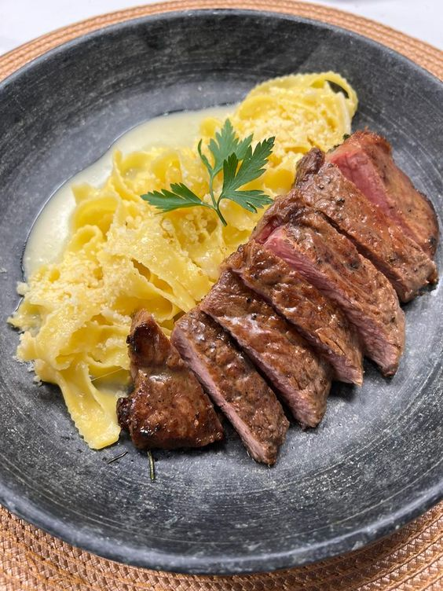
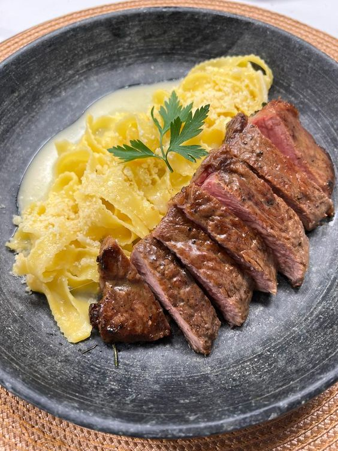

Bem-vindo ao Gourmett
Onde a Arte da Culinária Encontra a Excelência.
No Gourmett, cada prato é cuidadosamente preparado para transformar uma refeição em uma experiência única. Unindo tradição e inovação, nossa equipe de chefs utiliza ingredientes frescos e selecionados para criar combinações perfeitas de sabores e texturas. Com um ambiente elegante e acolhedor, o Gourmett oferece o cenário ideal para momentos especiais, desde jantares a dois até grandes celebrações. Nossa missão é proporcionar uma experiência gastronômica refinada, onde cada detalhe é pensado para encantar e satisfazer. Venha viver o verdadeiro prazer da alta gastronomia no Gourmett, onde cada refeição é uma celebração do bom gosto. Bon appétit!